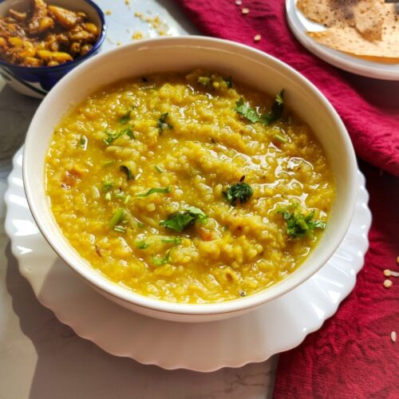

Dal Khichdi
To taste happiness with MyCookBook
Make sure you top your dal khichdi with generous amount of melted ghee!!
INGREDIENTS

1 cup dal, washed and drained
1 cup rice, washed and drained
1/4 tsp turmeric powder
1/2 hing
Salt
2 cloves
25 mm stick cinnamon
6 to 8 black peppercorns
2 red chiilies
1 tsp cimun seeds
2 green chillies
curry leaves
chooped onions
chopped garlic
chopped tomatoes
3/4 chilli powder
DIRECTION !!!
Step 1:
To make this combine dal, rice, hing, turmeric powder and 5 cups of water in a pressure cooker for 3 whistles
Step 2:
Heat the ghee and add cloves, cumin seeds, cinnamon, curry leaves, red chillies, onions, garlic, tomatoes and peppercrons
Step 3:
Add little salt and red chilli powder
Step 4:
Add the cooked dal-rice mix and some water again into it. Cook for more 2 minutes.
THE DAL KHICHDI IS READY!!!!